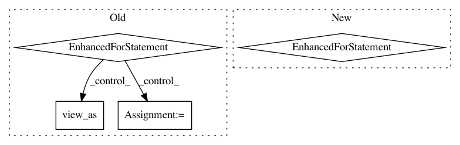

645c7c386e62d2fb1d50f4621c1a52645a13869f,mnist/main.py,,test,#,92
Before Change
model.eval()
test_loss = 0
correct = 0
for data, target in test_loader:
if args.cuda:
data, target = data.cuda(), target.cuda()
data, target = Variable(data, volatile=True), Variable(target)
output = model(data)
test_loss += F.nll_loss(output, target, size_average=False).data[0] // sum up batch loss
pred = output.data.max(1, keepdim=True)[1] // get the index of the max log-probability
correct += pred.eq(target.data.view_as(pred)).long().cpu().sum()
test_loss /= len(test_loader.dataset)
print("\nTest set: Average loss: {:.4f}, Accuracy: {}/{} ({:.0f}%)\n".format(
test_loss, correct, len(test_loader.dataset),
100. * correct / len(test_loader.dataset)))
After Change
test_loss = 0
correct = 0
with torch.no_grad():
for data, target in test_loader:
data, target = data.to(device), target.to(device)
output = model(data)
test_loss += F.nll_loss(output, target, size_average=False).item() // sum up batch loss
pred = output.max(1, keepdim=True)[1] // get the index of the max log-probability
correct += pred.eq(target.view_as(pred)).sum().item()
test_loss /= len(test_loader.dataset)
print("\nTest set: Average loss: {:.4f}, Accuracy: {}/{} ({:.0f}%)\n".format(
test_loss, correct, len(test_loader.dataset),
100. * correct / len(test_loader.dataset)))
In pattern: SUPERPATTERN
Frequency: 3
Non-data size: 4
Instances
Project Name: pytorch/examples
Commit Name: 645c7c386e62d2fb1d50f4621c1a52645a13869f
Time: 2018-04-24
Author: soumith@gmail.com
File Name: mnist/main.py
Class Name:
Method Name: test
Project Name: pytorch/fairseq
Commit Name: 03a57decde62c76783ef7e2288bd61bc87f6e266
Time: 2018-12-24
Author: myleott@fb.com
File Name: fairseq/optim/fp16_optimizer.py
Class Name: FP16Optimizer
Method Name: step